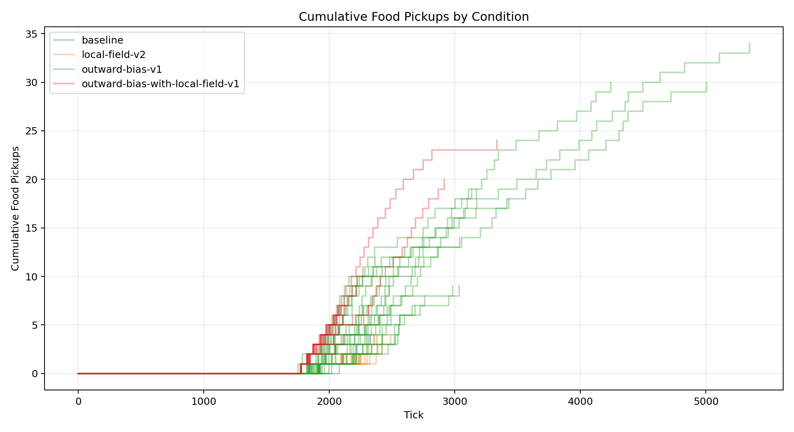
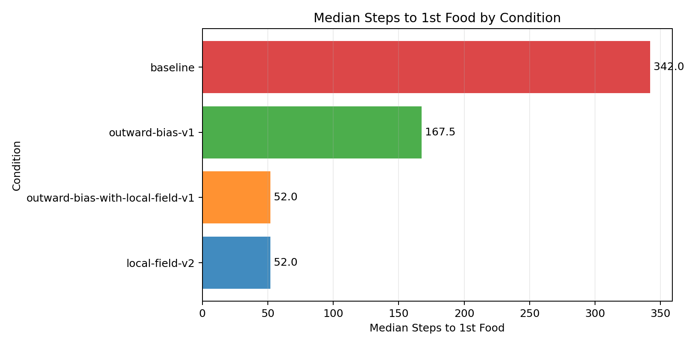
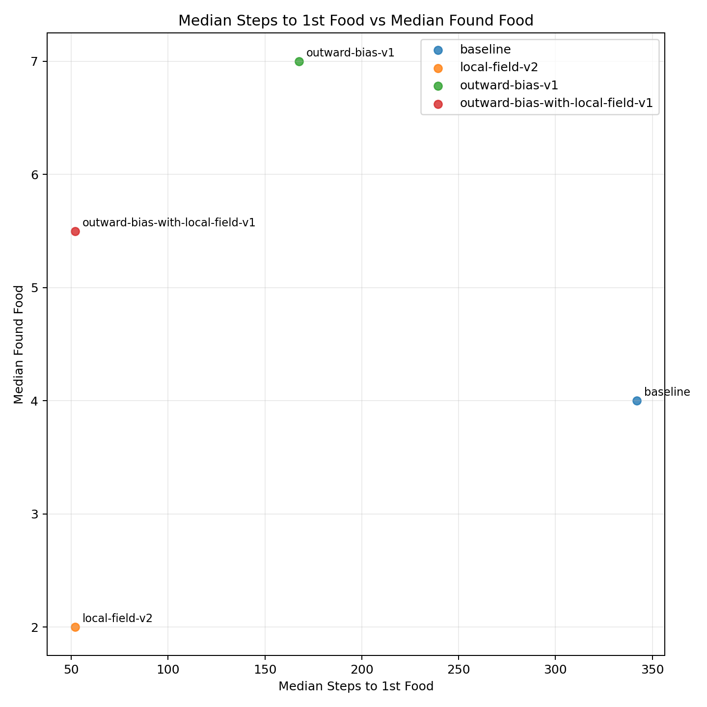
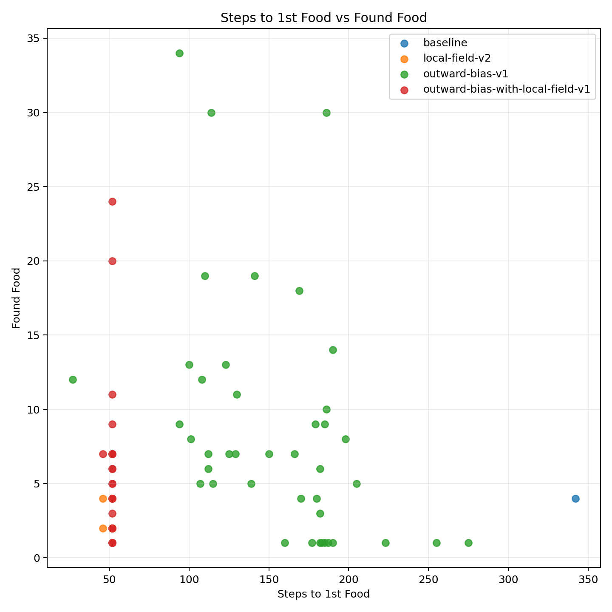

| Condition | Runs |
|---|---|
| baseline | 2 |
| local-field-v2 | 21 |
| outward-bias-v1 | 50 |
| outward-bias-with-local-field-v1 | 50 |
| Metric | Conditions | Min | Max | Average | Median | Mode |
|---|---|---|---|---|---|---|
| analysis.delivered_food | 4 | 2 | 8.300 | 5.183 | 5.215 | none |
| analysis.delivered_food_per_day | 4 | 0.074 | 0.254 | 0.163 | 0.162 | none |
| analysis.final_day | 4 | 25 | 30.660 | 27.565 | 27.300 | none |
| analysis.final_tick | 4 | 2446.619 | 3016.680 | 2706.680 | 2681.710 | none |
| analysis.found_food | 4 | 2 | 8.520 | 5.278 | 5.297 | none |
| analysis.selected_move_count | 4 | 718.905 | 1241.320 | 950.411 | 920.710 | none |
| analysis.simulation_length | 4 | 762.619 | 1332.680 | 1022.680 | 997.710 | none |
| analysis.steps_to_nth_food.1 | 4 | 51.143 | 342 | 149.146 | 101.720 | none |
| analysis.steps_to_nth_food.10 | 2 | 26.688 | 34.250 | 30.469 | 30.469 | none |
| analysis.steps_to_nth_food.11 | 2 | 38.900 | 70.385 | 54.642 | 54.642 | none |
| analysis.steps_to_nth_food.12 | 2 | 28.111 | 36.167 | 32.139 | 32.139 | none |
| analysis.steps_to_nth_food.13 | 2 | 29.778 | 53.800 | 41.789 | 41.789 | none |
| analysis.steps_to_nth_food.14 | 2 | 43.222 | 109.875 | 76.549 | 76.549 | none |
| analysis.steps_to_nth_food.15 | 2 | 36.286 | 85.571 | 60.929 | 60.929 | none |
| analysis.steps_to_nth_food.16 | 2 | 39.286 | 48 | 43.643 | 43.643 | none |
| analysis.steps_to_nth_food.17 | 2 | 38.857 | 78.167 | 58.512 | 58.512 | none |
| analysis.steps_to_nth_food.18 | 2 | 23.167 | 75.143 | 49.155 | 49.155 | none |
| analysis.steps_to_nth_food.19 | 2 | 28.500 | 49.167 | 38.833 | 38.833 | none |
| analysis.steps_to_nth_food.2 | 4 | 17 | 388.200 | 122.049 | 41.498 | none |
| analysis.steps_to_nth_food.20 | 2 | 34.500 | 46.833 | 40.667 | 40.667 | none |
| analysis.steps_to_nth_food.21 | 2 | 20.250 | 49.750 | 35 | 35 | none |
| analysis.steps_to_nth_food.22 | 2 | 40.500 | 71.750 | 56.125 | 56.125 | none |
| analysis.steps_to_nth_food.23 | 2 | 37.500 | 75 | 56.250 | 56.250 | none |
| analysis.steps_to_nth_food.24 | 2 | 81.250 | 204.333 | 142.792 | 142.792 | none |
| analysis.steps_to_nth_food.25 | 2 | 26.500 | 35 | 30.750 | 30.750 | none |
| analysis.steps_to_nth_food.26 | 2 | 30.750 | 58 | 44.375 | 44.375 | none |
| analysis.steps_to_nth_food.27 | 2 | 57.500 | 78.500 | 68 | 68 | none |
| analysis.steps_to_nth_food.28 | 2 | 21 | 66.500 | 43.750 | 43.750 | none |
| analysis.steps_to_nth_food.29 | 2 | 52.333 | 79.500 | 65.917 | 65.917 | none |
| analysis.steps_to_nth_food.3 | 4 | 47.947 | 145 | 84.781 | 73.088 | none |
| analysis.steps_to_nth_food.30 | 2 | 59.500 | 123 | 91.250 | 91.250 | none |
| analysis.steps_to_nth_food.31 | 2 | 39.500 | 122 | 80.750 | 80.750 | none |
| analysis.steps_to_nth_food.32 | 2 | 95 | 164 | 129.500 | 129.500 | none |
| analysis.steps_to_nth_food.33 | 2 | 52 | 171 | 111.500 | 111.500 | none |
| analysis.steps_to_nth_food.34 | 2 | 19.500 | 94 | 56.750 | 56.750 | none |
| analysis.steps_to_nth_food.35 | 1 | 76 | 76 | 76 | 76 | none |
| analysis.steps_to_nth_food.4 | 4 | 29.588 | 83 | 54.196 | 52.099 | none |
| analysis.steps_to_nth_food.5 | 2 | 37.531 | 43.735 | 40.633 | 40.633 | none |
| analysis.steps_to_nth_food.6 | 2 | 23 | 39.393 | 31.196 | 31.196 | none |
| analysis.steps_to_nth_food.7 | 2 | 32 | 36.731 | 34.365 | 34.365 | none |
| analysis.steps_to_nth_food.8 | 2 | 30.905 | 35.875 | 33.390 | 33.390 | none |
| analysis.steps_to_nth_food.9 | 2 | 38.929 | 52.632 | 45.780 | 45.780 | none |
| analysis.steps_to_nth_queen.1 | 4 | 10 | 129.878 | 47.484 | 25.030 | none |
| analysis.steps_to_nth_queen.10 | 2 | 22.188 | 26.333 | 24.260 | 24.260 | none |
| analysis.steps_to_nth_queen.11 | 2 | 38.917 | 52.400 | 45.658 | 45.658 | none |
| analysis.steps_to_nth_queen.12 | 2 | 23.444 | 29.750 | 26.597 | 26.597 | none |
| analysis.steps_to_nth_queen.13 | 2 | 27.889 | 35.556 | 31.722 | 31.722 | none |
| analysis.steps_to_nth_queen.14 | 2 | 19.444 | 30.625 | 25.035 | 25.035 | none |
| analysis.steps_to_nth_queen.15 | 2 | 26.571 | 49.286 | 37.929 | 37.929 | none |
| analysis.steps_to_nth_queen.16 | 2 | 32.143 | 39 | 35.571 | 35.571 | none |
| analysis.steps_to_nth_queen.17 | 2 | 25.429 | 51.833 | 38.631 | 38.631 | none |
| analysis.steps_to_nth_queen.18 | 2 | 17.500 | 50.500 | 34 | 34 | none |
| analysis.steps_to_nth_queen.19 | 2 | 18.667 | 46.167 | 32.417 | 32.417 | none |
| analysis.steps_to_nth_queen.2 | 4 | 10 | 44.077 | 24.290 | 21.542 | none |
| analysis.steps_to_nth_queen.20 | 2 | 22 | 33.250 | 27.625 | 27.625 | none |
| analysis.steps_to_nth_queen.21 | 2 | 14.750 | 51.500 | 33.125 | 33.125 | none |
| analysis.steps_to_nth_queen.22 | 2 | 32.250 | 36.250 | 34.250 | 34.250 | none |
| analysis.steps_to_nth_queen.23 | 2 | 29.750 | 44 | 36.875 | 36.875 | none |
| analysis.steps_to_nth_queen.24 | 2 | 33.667 | 66 | 49.833 | 49.833 | none |
| analysis.steps_to_nth_queen.25 | 2 | 19 | 28.500 | 23.750 | 23.750 | none |
| analysis.steps_to_nth_queen.26 | 2 | 30.250 | 43 | 36.625 | 36.625 | none |
| analysis.steps_to_nth_queen.27 | 2 | 50.750 | 55.500 | 53.125 | 53.125 | none |
| analysis.steps_to_nth_queen.28 | 2 | 17.500 | 52.250 | 34.875 | 34.875 | none |
| analysis.steps_to_nth_queen.29 | 2 | 42.667 | 78 | 60.333 | 60.333 | none |
| analysis.steps_to_nth_queen.3 | 4 | 9 | 44.135 | 29.703 | 32.837 | none |
| analysis.steps_to_nth_queen.30 | 2 | 45.500 | 83 | 64.250 | 64.250 | none |
| analysis.steps_to_nth_queen.31 | 2 | 14.500 | 93 | 53.750 | 53.750 | none |
| analysis.steps_to_nth_queen.32 | 2 | 44.500 | 93 | 68.750 | 68.750 | none |
| analysis.steps_to_nth_queen.33 | 2 | 44.500 | 144 | 94.250 | 94.250 | none |
| analysis.steps_to_nth_queen.34 | 2 | 11 | 85 | 48 | 48 | none |
| analysis.steps_to_nth_queen.35 | 1 | 75 | 75 | 75 | 75 | none |
| analysis.steps_to_nth_queen.4 | 4 | 10 | 27.545 | 22.426 | 26.079 | none |
| analysis.steps_to_nth_queen.5 | 2 | 22.485 | 32.903 | 27.694 | 27.694 | none |
| analysis.steps_to_nth_queen.6 | 2 | 21.143 | 21.333 | 21.238 | 21.238 | none |
| analysis.steps_to_nth_queen.7 | 2 | 21.833 | 30.800 | 26.317 | 26.317 | none |
| analysis.steps_to_nth_queen.8 | 2 | 25.312 | 26.850 | 26.081 | 26.081 | none |
| analysis.steps_to_nth_queen.9 | 2 | 25.778 | 32.214 | 28.996 | 28.996 | none |
| day | 4 | 25 | 30.660 | 27.565 | 27.300 | none |
| delivered_food | 4 | 2 | 8.300 | 5.183 | 5.215 | none |
| egg_hatched | 4 | 1 | 1 | 1 | 1 | 1 |
| egg_laid | 4 | 1 | 1 | 1 | 1 | 1 |
| eggs | 4 | 0 | 0 | 0 | 0 | 0 |
| found_food | 4 | 2 | 8.520 | 5.278 | 5.297 | none |
| players | 4 | 0 | 0 | 0 | 0 | 0 |
| queens | 4 | 1 | 1 | 1 | 1 | 1 |
| randomized_seed | 4 | 1777126490512.476 | 1777126958605.860 | 1777126664526.009 | 1777126604492.850 | none |
| simulation_length | 4 | 762.619 | 1332.680 | 1022.680 | 997.710 | none |
| start_tick | 4 | 1684 | 1684 | 1684 | 1684 | 1684 |
| tick | 4 | 2446.619 | 3016.680 | 2706.680 | 2681.710 | none |
| workers | 4 | 0 | 0 | 0 | 0 | 0 |
| world.height | 4 | 274 | 274 | 274 | 274 | 274 |
| world.width | 4 | 160 | 160 | 160 | 160 | 160 |



